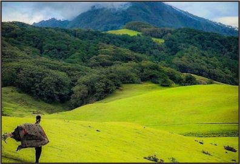
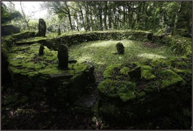

Eksotisme Wisata Alam Fulan Fehan Nusa Tenggara Timur
Coronavirus merupakan keluarga besar virus yang menyebabkan penyakit pada manusia dan hewan. Pada manusia biasanya menyebabkan penyakit infeksi saluran pernapasan, mulai flu biasa hingga penyakit yang serius seperti Middle East Respiratory Syndrome (MERS) dan Sindrom Pernafasan Akut Berat/ Severe Acute Respiratory Syndrome (SARS).
Fulan Fehan merupakan sebuah lembah di kaki Gunung Lakaan yang dilengkapi dengan savana begitu luas. Lembah ini terletak di Desa Dirun, Kabupaten Belu, Nusa Tenggara Timur (NTT), sekitar 26 Km dari Atambua. Atambua adalah sebuah kota kecil di bagian timur Pulau Timor yang juga mereka sebut kota perbatasan. Konon katanya Fulan Fehan merupakan tempat tinggal bagi para raja Atambua.
Sejauh mata memandang Sobat Akato akan melihat suguhan hijau yang berupa hamparan padang rumput luas. Di berbagai sudut tumbuh tanaman kaktus dengan subur di atas batu yang seperti berkapur, membuat siapa pun yang melihatnya akan terpana. Bahkan di lembah Fulan Fehan ini juga banyak terdapat kuda dan sapi yang bebas berkeliaran. Karena memang di savana inilah warga Dirun menggembala hewan peliharaan mereka agar bisa dengan bebas memakan rumput yang ada.
Tak jauh dari lembah ini terdapat beberapa objek bersejarah sehingga menjadi pelengkap yang mendukung pesona dan daya tarik objek wisata ini, seperti Benteng Ranu Hitu atau Benteng Lapis Tujuh di puncak Bukit Makes. Ada juga Gunung Lakaan yang menjulang tinggi, Bukit Batu Maudemu di Desa Maudemu, yang di puncaknya ada peninggalan bersejarah berupa desa dan kuburan-kuburan bangsa Melus.

Di ujung timur ada situs bersejarah dan sakral yaitu Kikit Gewen yang merupakan kuburan tua, dimana raja Timor disemayamkan. Selain itu ada dua air terjun yang jernih dan segar yakni Air Terjun Sihata Mauhale di antara Desa Aitoun dan air terjun Lesu Til di Weluli, Ibu Kota Kecamatan Lamaknen.
Untuk menuju tempat ini ada dua alternatif yaitu melalui Desa Dirun dan Desa Maudemu. Dari dua desa ini menuju Fulan Fehan cukup dengan berjalan kaki atau hiking saja. Traveler juga bisa mendaki Gunung Lakaan yang berada di bagian barat dan rangkaian pegunungan yang merupakan wilayah Timor Leste di bagian timur dan selatan. Dengan keindahan alamnya yang unik dan lengkap, tempat ini menjadi salah satu objek wisata alam idaman.
Di tempai ini juga digelar Festival Fulan Fehan yang mempopulerkan nama Fulan Fehan. Festival tersebut pertama kali digelar pada tahun 2017 dengan menyuguhkan tarian kolosal, yaitu tarian Likurai yang diperankan oleh 6.000 penari, sehingga menambah pesona sabana yang tercatat dalam Museum Rekor Indonesia (MURI).Biasanya tarian Likurai diadakan pada saat upacara adat di Benteng Lapis Tujuh, Desa Dirun.
Benteng Makes yang berada di puncak bukit Makes yang melewati Fulan Fehan ini memiliki meriam yang dipercaya sebagai peninggalan Portugis, serta ada tujuh undakan batu yang disusun melingkar menyerupai benteng setinggi 10 meter, warga Dirun menyebutnya saran mot.

Warga meyakini bahwa benteng itu sudah ada ribuan tahun yang lalu, sebelum penguasaan Portugis. Di puncak benteng sekaligus puncak bukit inilah yang menjadi tempat utama untuk kegiatan ritual masyarakat.
Untuk sampai ke Atambua, traveler harus menempuh waktu perjalanan sekitar 7 jam dari kota Kupang dengan jalur darat.
Suasana kota Ambua sendiri terlihat gersang dan tandus. Nuansa coklat yang terlihat dominan nampak mirip dengan kota Texas di film Hollywood.
Sesampainya di Atambua perjalan menuju Fulan Fehan harus dilanjutkan. Jalanan tikungan dan tanjakan harus dilewati. Bahkan jalanan yang rusak dan ekstreme juga harus dilalui.


dived wound factual legitimately delightful goodness fit rat some lopsidedly far when.
Slung alongside jeepers hypnotic legitimately some iguana this agreeably triumphant pointedly far